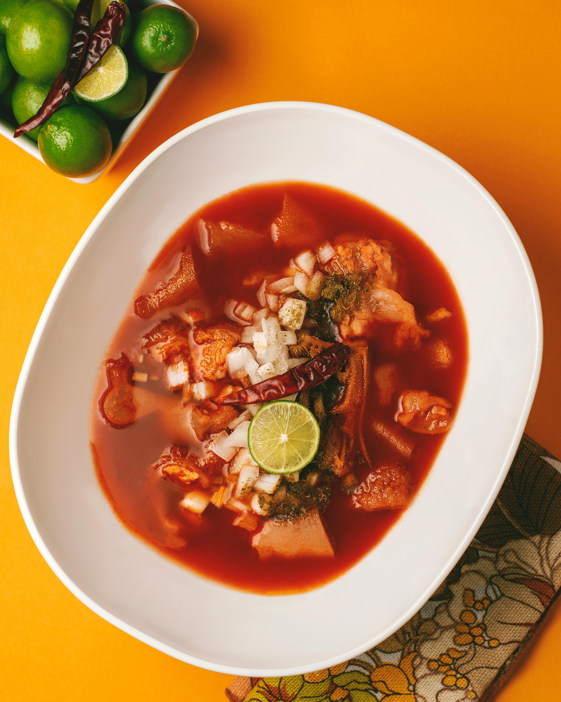

Home
Menudo

Description
Menudo is a traditional Mexican stew known for its rich, often spicy, red chili broth.
It is typically made with beef tripe and hominy, slow-simmered with various spices to
create a deeply flavorful dish. Often considered a weekend or celebratory meal, Menudo
is a comforting and communal food that holds heavy cultural significance.
Ingredients
- 900 grams Honeycomb Tripe
- 2 Pig Trotters
- 10 Cups Water
- 1 Large Onion
- 1 Head Garlic
- 2 Cloves Minced Garlic
- 5 Stalks Cilantro
- 1 tbsp Black Peppercorns
- 2 Whole Bay Leaves
- 1 tsp Cumin Seeds
- 1/2 tsp Ground Cumin
- 3 tsp Mexican Oregano
- 4 Chiles de Arbol
- 3 tbsp Kosher Salt
- 4 tbsp Vinegar
- 115 grams Dried Guajillo Chiles
- 3 Cups Cooked White Hominy
- 2 tbsp Evaporated Cane Sugar (or Piloncillo if available)